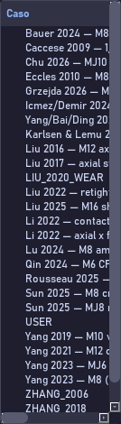
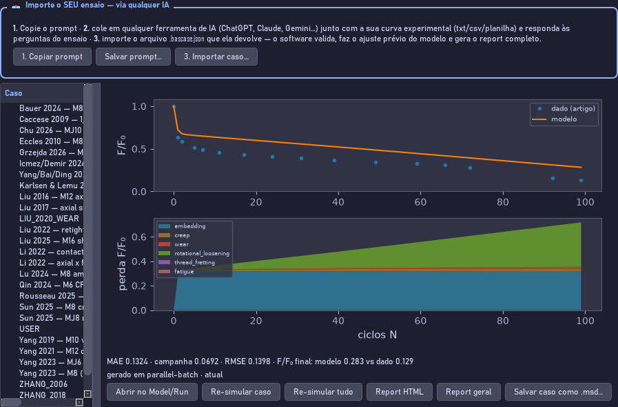
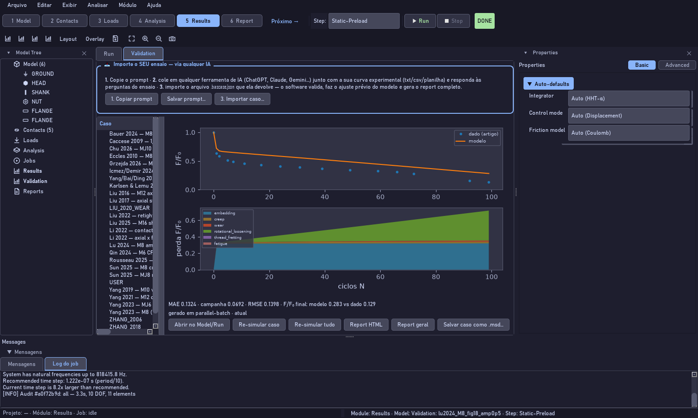

A porta rápida: control I. A lista inteira por nome, com busca, censo, critério e erro de cada curva.

A porta completa: a árvore de Results, Validation. Primeiro nível o artigo, segundo a curva, com o erro ao lado.

O detalhe da curva escolhida: dado digitalizado contra modelo, a decomposição por mecanismo, as métricas e os botões.

Tudo no lugar, dentro do programa, com o painel de intake em destaque para trazer o seu próprio ensaio.
Transcrição
As duzentas e sete curvas não são um anexo: elas vêm dentro do programa e você as consulta como consultaria um catálogo. Há duas portas. A primeira é control I, Importar caso da validação. Abre a lista inteira por nome, com busca. Digite o artigo, a bitola ou a revista: lu dois mil e vinte e quatro, M oito, Sensors. Cada linha diz se a curva entra no censo do artigo, se atende ao critério, e qual o erro médio absoluto. No rodapé, a referência completa e o DOI clicável. Escolha uma e ela abre como modelo editável, com as constantes exatamente como foram adotadas. A segunda porta é a aba Validation, dentro de Results. Ali está a árvore: no primeiro nível o artigo, no segundo cada curva daquele artigo, com o erro ao lado. Selecione uma curva e o painel da direita mostra três coisas. O gráfico, com o dado digitalizado em pontos, o modelo alinhado em linha cheia e, tracejada, a curva crua do motor. A decomposição por mecanismo, embaixo, que diz de onde veio a perda. E as métricas: erro médio absoluto, resíduo máximo e desvio dos resíduos, cada uma com o limite do critério ao lado. Quatro botões fazem o trabalho. Abrir no Model traz o caso como modelo, para você mexer. Re-simular roda o motor de novo naquele caso. Report HTML abre o relatório completo daquela curva, com condições, modelo, resíduo e cada constante com a sua procedência. Report geral abre o documento mestre, com o corpus inteiro e o censo. Uma sugestão de método: antes de construir o seu modelo, abra dois ou três casos parecidos com a sua junta e olhe as constantes que eles adotaram. É a maneira mais rápida de saber o que é um valor razoável.
Cada controle desta tela
Controle
O que faz
Importar caso da validação… (Ctrl+I)
A lista inteira por nome, com busca e as três colunas de veredito.
Campo de busca
Filtra por artigo, caso, referência ou DOI.
Somente o censo do artigo
Alterna entre as duzentas e cinco do censo e as duzentas e sete do corpus.
Árvore fonte → curva
Artigo no primeiro nível, curva no segundo, erro ao lado.
Gráfico
Pontos: o dado do artigo. Linha cheia: o modelo alinhado. Tracejada: a curva crua do motor.
Decomposição por mecanismo
Quanto da perda veio de assentamento, fluência, desgaste e rotação da porca.
Métricas
Erro médio absoluto, resíduo máximo e desvio dos resíduos, com os limites do critério.
Abrir no Model/Run
Traz o caso como modelo editável, com as constantes adotadas.
Re-simular caso / Re-simular tudo
Roda o motor de novo naquele caso, ou no corpus inteiro.
Report HTML / Report geral
Relatório daquela curva, com procedência de cada constante; e o documento mestre do corpus.
Salvar caso como .msd…
Grava o modelo do caso onde você quiser, para partir dele.
Erro comum. Tratar as constantes de um caso como valores universais. Elas foram adotadas para aquela bancada e aquele artigo; use-as como ponto de partida, não como resposta.